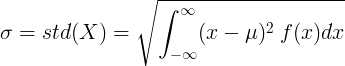

Standard Deviation
In probability and statistics, the standard deviation of a random variable is the average distance of a random variable from the mean value.
It represents how the random variable is distributed near the mean value. Small standard deviation indicates that the random variable is distributed near the mean value. Big standard deviation indicates that the random variable is distributed far from the mean value.
Standard deviation definition formula
The standard deviation is the square root of the variance of random variable X, with mean value of μ.

From the definition of the standard deviation we can get

Standard deviation of continuous random variable
For continuous random variable with mean value μ and probability density function f(x):

or
![\sigma =std(X)=\sqrt{\left [ \int_{-\infty }^{\infty }x^2\: f(x)dx \right ]-\mu^2}](standard_deviation/cont_std2.gif)
Standard deviation of discrete random variable
For discrete random variable X with mean value μ and probability mass function P(x):

or
![\sigma =std(X)=\sqrt{\left [ \sum_{i}^{}x_i^2P(x_i) \right ]-\mu^2}](standard_deviation/disc_std2.gif)
See also
PROBABILITY & STATISTICS
- Basic probability
- Expectation
- Variance
- Standard deviation
- Probability distribution
- Normal distribution
- Statistics symbols
RAPID TABLES